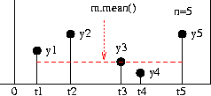

SimPy Simplified
| Authors: | G A Vignaux and Klaus Muller |
|---|---|
| Date: | 2008 March 15 |
1 Introduction
SimPy is a free, open-source discrete-event simulation system written in Python. It provides a number of tools for programmers writing simulation programs. This document is a simplified manual for a simplified version of SimPy. It describes a subset of SimPy's capabilities - sufficient, we think, to develop standard simulations. You may also find The Bank tutorial included in SimPy's distribution helpful in the early stages. The full Manual included int eh distribution is much more detailed.
The active elements (or entities) of a SimPy model are objects of a SimPy Process class defined by the programmer (see Processes, section 3). Each entity has a standard method, a Process Execution Method (referred to by SimPy programmers as a PEM) which specifies its actions in detail. Each PEM runs in parallel with (and may interact with) the PEMs of other entities.
The activity of an entity may be delayed for fixed or random times, queued at resource facilities, and may be interrupted by or interact in different ways with other entities and components. For example in a gas station model, automobile entities (objects of an Automobile Class) may have to wait at the gas station for a pump to become available. On obtaining a pump it takes time to fill the tank. The pump is then released for the next automobile in the queue.
SimPy has three kinds of resource facilities (Resources, Levels, and Stores). Each type models a congestion point where entities queue while waiting to acquire or, in some cases, to deposit a resource.SimPy automatically handles the queueing.
- Resources have one or more identical resource units, each of which can be held by entities. Extending the example above, the gas station might be modelled as a Resource with its pumps as resource units. When a car requests a pump the gas station resource automatically queues it until a pump becomes available (perhaps immediately). The car holds the pump until it finishes refuealling and then releases it for use by the next car.
- Levels model the supply and consumption of a homogeneous undifferentiated "material". The Level holds an amount that is fully described by a non-negative number which can be increased or decreased by entities. For example, a gas station stores gas in large storage tanks. The tanks can be filled by tankers and emptied by cars refuelling. In contrast to the operation of a Resource, a car need not return the gas to the gas station.
- Stores model the production and consumption of distinguishable items. A Store holds a list of items. Entities can insert or remove items from the list and these can be of any type. They can even be SimPy process objects. For example, the gas station holds spares of different types. A car might request a set of spares from the Store. The store is replenished by deliveries from a warehouse.
SimPy also supplies Monitors to record simulation events. Monitors are used to compile summary statistics such as waiting times and queue lengths. These statistics includes simple averages and variances, time-weighted averages, or histograms. In particular, data can be gathered on the queues associated with Resources, Levels and Stores. For example we may collect data on the average number of cars waiting at the gas station and the distribution of their waiting times. Monitors preserve complete time-series records that may later be used for more advanced post-simulation analyses.
You need to write Python code to develop a SimPy model. In particular, you will have to define and use classes and their objects. Python is free and open-source and is available on most platforms. You can find out more about it and download it from the Python web-site where there is full documentation and tutorials. SimPy requires Python version 2.3 or later.
2 Simulation with SimPy
To use the SimPy simulation system in your Python program you must import its Simulation module using:
from SimPy.Simulation import *
We recommend that new users instead import SimPy.SimulationTrace, which works the same but also automatically produces a timed listing of events as the model executes. (An example of such a trace is shown in The Resource Example with Tracing):
from SimPy.SimulationTrace import *
Discrete-event simulation programs automatically maintain the current simulation time in a software clock. This cannot be directly changed by the user. In SimPy the current clock value is returned by the now() function. At the start of the simulation it is set to 0.0. While the simulation program runs, simulation time steps forward from one event to the next. An event occurs whenever the state of the simulated system changes. For example, an event might be the arrival or departure of a car from the gas station.
The initialize statement initialises global simulation variables and sets the software clock to 0.0. It must appear in your program before any SimPy process objects are activated.
initialize()
This is followed by SimPy statements creating and activating entities (that is, SimPy process objects). Activation of entities adds events to the simulation event schedule. Execution of the simulation itself starts with the following statement:
simulate(until=endtime)
The simulation then starts, and SimPy seeks and executes the first event in the schedule. Having executed that event, the simulation seeks and executes the next event, and so on.
Typically a simulation terminates when there ae no moe events to execute or when the endtime is reached but it can be stopped at any time by the command:
stopSimulation( )
After the simulation stops, further statements can be executed. now() will retain the time of stopping and data held in Monitors will be available for display or further analysis.
The following fragment shows only the main block in a simulation program to illustrate the general structure. A complete Example Program is shown later. Here Car is a Process class with a go as its PEM (described later) and m is defined as an entity of that class, that is, a particular car. Activating m has the effect of scheduling at least one event by starting m's PEM. The simulate(until=1000.0) statement starts the simulation itself. This immediately jumps to the first scheduled event. It will continue until it runs out of events to execute or the simulation time reaches 1000.0. When the simulation stops the Report function is called to display the results:
Process Car(Process):
def go(self):
# PEM for a Car
...
def Report():
# print results when finished
...
initialize()
c = Car(name="Car23")
activate(c, c.go(), at=0.0)
simulate(until=1000.0)
Report()
In addition to SimPy.Simulation there are three alternative simulation libraries with special facilities. Beside SimPy.SimulationTrace, already mentioned, there are SimPy.SimulationRT for real time synchronisation and SimPy.SimulationStep for event-stepping through a simulation. See the Manual for more information.
3 Processes
SimPy's active objects (entities) are process objects -- instances of a class written by the user that inherits from SimPy's Process class.
For example, if we are simulating a gas station we might model each car as an object of the class Car. A car arrives at the gas station (modelled as a Resource with pumps) it requests a pump and may need to wait for it. Then it fills its tank and releases the pump. It might also buy an item from the station store. The Car class specifies the logic of these actions in its Process Execution Method (PEM). The simulation creates individual cars as it runs and their evolutions are directed by the Car class's PEM.
3.1 Defining a process
Each Process class inherits from SimPy's Process class. For example the header of the definition of a Car Process class would be:
class Car(Process):
At least one Process Execution Method (PEM) must be defined in each Process class (though an entity can have only one PEM active). A PEM may have arguments in addition to the required self argument needed by all Python class methods. Naturally, other methods and, in particular, an __init__, may be defined.
A Process Execution Method (PEM) defines the actions that are performed by its process objects. Each PEM must contain at least one of the special ``yield`` statements, described later. This makes the PEM a Python generator function so that it has resumable execution -- it can be restarted again after the yield statement without losing its current state. A PEM may have any name of your choice. For example it may be called execute( ) or run( ). However, if a PEM is called ACTIONS, SimPy recognises this as a PEM. This can simplify the start method as explained below.
The yield statements are simulation commands which affect an ongoing life cycle of Process objects. These statements control the execution and synchronisation of multiple processes. They can delay a process, put it to sleep, request a shared resource or provide a resource. They can add new events to the simulation event schedule, cancel existing ones, or cause processes to wait for a change in the simulated system's state.
For example, here is a Process Execution Method, go(self), for the simple Car class that does no more than delay for a time. As soon as it is activated it prints out the current time, the car object's name and the word Starting. After a simulated delay of 100.0 time units (in the yield hold, ... statement) it announces that this car has "Arrived":
def go(self): print now(), self.name, 'Starting' yield hold,self,100.0 print now(), self.name, 'Arrived'A process object's PEM starts execution when the object is activated, provided the simulate(until=endtime) statement has been executed.
__init__(self, ...), where ... indicates other arguments. This method is optional but is useful to initialise the process object, setting values for its attributes. As for any sub-class in Python, the first line of this method must call the Process class's __init__( ) method in the form:
Process.__init__(self)
You can then use additional commands to initialise attributes of the Process class's objects. You can also override the standard name attribute of the object.
If present, the __init__( ) method is always called whenever you create a new process object. If you do not wish to provide for any attributes other than a name, the __init__ method may be dispensed with. An example of an __init__( ) method is shown in the Example Program.
3.2 Creating a process object
An entity (process object) is created in the usual Python manner by calling the Class. Process classes have a single argument, name which can be specified even if no __init__ method is defined. It defaults to 'a_process' unless the user specified a different name.
For example to create a new Car object with a name Car23:
c = Car(name="Car23")
3.3 Starting SimPy Process Objects
An entity (process object) is "passive" when first created, i.e., it has no scheduled events. It must be activated to start its Process Execution Method. To do this you can use either the activate function or the start method of the Process.
activate
Activating an entity by using the SimPy activate function:
activate(p, p.pemname([args])[,{at=t|delay=period}])
activates process object p, provides its Process Execution Method p.pemname( ) with the arguments args and possibly assigns values to the other optional parameters. You must choose one (or neither) of at=t and delay=period. The default is to activate at the current time (at=now( )) and with no delay (delay=0).
For example: to activate an entity, cust at time 10.0 using its PEM called lifetime:
cust = Customer() activate(cust, cust.lifetime(), at=10.0)
start
An alternative to the activate() function is the start method of Process objects:
p.start(p.pemname([args])[,{at=t|delay=period}])
p is a Process object. The PEM, pemname, can have arguments args and any identifier (such as run, lifecycle, etc).
For example, to activate the process object cust using the PEM with identifier lifetime at time 10.0 we would use:
cust.start(cust.lifetime(),at=10.0)
The standard PEM name, ACTIONS
The identifier ACTIONS is recognised by SimPy as a PEM name and can be used (or implied) in the start method.
p.start([p.ACTIONS()] [,{at=t|delay=period}])
ACTIONS cannot have parameters. The call p.ACTIONS() is optional but may make your code clearer.
For example, to activate the Process object cust with a PEM called ACTIONS at time 10.0, the following are equivalent (and the second version more convenient):
cust.start(cust.ACTIONS(), at=10.0) cust.start(at=10.0)
A reminder: Even activated process objects will not start operating until the simulate() statement is executed.
3.4 Elapsing time in a Process
A PEM uses the yield hold command to temporarily delay a process object's operations. This might represent a service time for the entity. (Waiting is handled automatically by the resource facilities and is not modelled by yield hold)
yield hold
yield hold,self,t
Causes the entity to delay t time units. After the delay, it continues with the next statement in its PEM. During the hold the entity's operations are suspended.
Paradoxically, in the model world, the entity is considered to be busy during this simulated time. For example, it might be involved in filling up with gas or driving. In this state it can be interrupted by other entities.
3.5 More about Processes
An entity (Process object) can be "put to sleep" or passivated using yield passivate,self (and it can be reactivated by another entity using reactivate), or permanently reoved from the future event queue by the command self.cancel(). Active entities can be interrupted by other entities. Examine the full Manual for details.
3.6 A SimPy Program
This is a complete SimPy script. We define a Car class with a PEM called go( ). We also (for interest) define an __init__( ) method to provide individual cars with an identification name and engine size, cc. The cc attribute is not used in this very simple example.
Two cars, p1 and p2 are created. p1 and p2 are activated to start at simulation times 0.6 and 0.0, respectively. Note that these will not start in the same order they appear in the program listing. p2 actually starts first in the simulation. Nothing happens until the simulate(until=200) statement. When both cars have finished (at time 6.0+100.0=106.0) there will be no more events so the simulation will stop at that time:
from SimPy.Simulation import *
class Car(Process):
def __init__(self,name,cc):
Process.__init__(self,name=name)
self.cc = cc
def go(self):
print now( ), self.name, "Starting"
yield hold,self,100.0
print now( ), self.name, "Arrived"
initialize( )
c1 = Car("Car1",2000) # a new car
activate(c1,c1.go( ),at=6.0) # activate at time 6.0
c2 = Car("Car2",1600)
activate(c2,c2.go( )) # activate at time 0
simulate(until=200)
print 'Current time is ',now( ) # will print 106.0
Running this program gives the following output:
0 Car2 Starting 6.0 Car1 Starting 100.0 Car2 Arrived 106.0 Car1 Arrived Current time is 106.0
If, instead one chose to import SimPy.SimulateTrace at the start of the program one would obtain the following output. (The meaning of the phrase prior : False in the first two lines is described in the full Manual. prior is an advanced technique for fine control of PEM priorities but seldom affects simulated operations and so normally can be ignored/)
0 activate <Car1> at time: 6.0 prior: False 0 activate <Car2> at time: 0 prior: False 0 Car2 Starting 0 hold <Car2> delay: 100.0 6.0 Car1 Starting 6.0 hold <Car1> delay: 100.0 100.0 Car2 Arrived 100.0 <Car2> terminated 106.0 Car1 Arrived 106.0 <Car1> terminated Current time is 106.0
4 Resources
The three resource facilities provided by SimPy are Resources, Levels and Stores. Each models a congestion point where process objects may have to queue up to access resources. This section describes the Resource type of resource facility.
An example of queueing for a Resource might be a manufacturing plant in which a Task (modelled as an entity or Process object) needs work done by a Machine (modelled as a Resource object). If all of the Machines are currently being used, the Task must wait until one becomes free. A SimPy Resource can have a number of identical units, such as a number of identical machine units. An entity obtains a unit of the Resource by requesting it and, when it is finished, releasing it. A Resource maintains a list (the waitQ) of entities that have requested but not yet received one of the Resource's units, and another list (the activeQ) of entities that are currently using a unit. SimPy creates and updates these queues itself -- the user can read their values, but should not change them.
4.1 Defining a Resource object
A Resource object, r, is established by the following statement:
r = Resource(capacity=1, name='a_resource', unitName='units', monitored=False)
where
- capacity (positive integer) specifies the total number of identical units in Resource object r.
- name (string) the name for this Resource object (e.g., 'gasStation').
- unitName (string) the name for a unit of the resource (e.g., 'pump').
- monitored (False or True) If set to True, then information is gathered on the sizes of r's waitQ and activeQ, otherwise not.
For example, in the model of a 2-pump gas-station we might define:
gasstation = Resource(capacity=2,name='gasStation',unitName='pump')
Each Resource object, r, has the following additional attributes:
- r.n, the number of units that are currently free.
- r.waitQ, a queue (list) of processes that have requested but not yet received a unit of r, so len(r.waitQ) is the number of process objects currently waiting.
- r.activeQ, a queue (list) of process objects currently using one of the Resource's units, so len(r.activeQ) is the number of units that are currently in use.
- r.waitMon, the record (made by a Monitor whenever monitored==True) of the activity in r.waitQ. So, for example, r.waitMon.timeaverage() is the average number of processes in r.waitQ. See Data Summaries for an example.
- r.actMon, the record (made by a Monitor whenever monitored==True) of the activity in r.activeQ.
4.2 Requesting and releasing a unit of a Resource
A process can request and later release a unit of the Resource object, r, by using the following yield commands in a Process Execution Method:
yield request
yield request,self,r
requests a unit of Resource r
If a Resource unit is free when the request is made, the requesting entity takes it and moves on to the next statement in its PEM. If no Resource unit is available when the request is made, the requesting entity is appended to the Resource's waitQ and suspended. The next time a unit becomes available the first entity in the r.waitQ takes it and continues its execution.
For example, a Car might request a pump:
yield request,self,gasstation
(It is actually requesting a unit of the gasstation, i.e. a pump.) An entity holds a resource unit until it releases it.
Entities can use a priority system for queueing. They can also preempt (that is, interrupt) others already in the system. They can also renege from the waitQ (that is, abandon the queue if it takes too long). This is achieved by an extension to the yield request command. See the main Manual.
yield release
yield release,self,r
releases the unit of r.
For example the Car might release the pump:
yield release,self,gasstation
If, when the unit of r is released, another entity is waiting (in waitQ) it will take the unit, leave the waitQ and move into the activeQ and go one with its PEM.
4.3 Resource Example
In this complete script, the gasstation Resource object is given two resource units (capacity=2). Four cars arrive at the times specified in the program (not in the order they are listed). They all request a pump and use it for 100 time units:
from SimPy.Simulation import *
class Car(Process):
def __init__(self,name,cc):
Process.__init__(self,name=name)
self.cc = cc
def go(self):
print now( ), self.name, "Starting"
yield request,self,gasstation
print now( ), self.name, "Got a pump"
yield hold,self,100.0
yield release,self,gasstation
print now( ), self.name, "Leaving"
gasstation = Resource(capacity=2,
name='gasStation',unitName='pump')
initialize( )
c1 = Car("Car1",2000)
c2 = Car("Car2",1600)
c3 = Car("Car3",3000)
c4 = Car("Car4",1600)
activate(c1,c1.go( ),at=4.0) # activate at time 4.0
activate(c2,c2.go( )) # activate at time 0.0
activate(c3,c3.go( ),at=3.0) # activate at time 3.0
activate(c4,c4.go( ),at=3.0) # activate at time 2.0
simulate(until=300)
print 'Current time is ',now( )
This program results in the following output:
0 Car2 Starting 0 Car2 Got a pump 3.0 Car3 Starting 3.0 Car3 Got a pump 3.0 Car4 Starting 4.0 Car1 Starting 100.0 Car2 Leaving 100.0 Car4 Got a pump 103.0 Car3 Leaving 103.0 Car1 Got a pump 200.0 Car4 Leaving 203.0 Car1 Leaving Current time is 203.0
And, if we use SimPy.SimulationTrace to get an automatic trace we get the result shown in Appendix The Resource Example with Tracing. (It is rather long to be inserted here).
5 Levels
A Level holds an amount of a homogeneous undifferentiated "material." Thus the currently-available amount of material in a Level can be fully described by a real or integer number. One important difference from a Resource is that the amount a Level holds can be increased as well as decreased by entities. For example, a gas station stores petrol in large tanks. Tankers increase and refuelling cars decrease the amount of gas in the station's storage tanks.
5.1 Defining a Level
You define the Level resource facility lev by a statement like this:
lev = Level(name='a_level', unitName='units',
capacity='unbounded', initialBuffered=0, monitored=False)
where
- name (string) is a descriptive name for the Level object lev (e.g., 'inventory').
- unitName (string) is a descriptive name for the units in which the amount of material in lev is measured (e.g., 'kilograms').
- capacity (positive real or integer) is the capacity of the Level object lev. The default value is 'unbounded' which is interpreted as sys.maxint.
- initialBuffered (positive real or integer) is the initial amount of material in the Level object lev.
- monitored (`True or False) specifies whether the queues and the amount of material in lev will be recorded by a Monitor.
For example, in the model of the gas-station we might define:
tank = Level(capacity=10000,initialBuffered=5000,
name='Gas Tank',unitName='litres')
Every Level resource object, such as lev, also has the following additional attributes:
- lev.amount is the amount currently held in lev.
- lev.putQ is the queue of processes waiting to add amounts to lev, so len(lev.putQ) is the number of processes waiting to add amounts.
- lev.getQ is the queue of processes waiting to get amounts from lev, so len(lev.getQ) is the number of processes waiting to get amounts.
- lev.monitored is True if the queues are to be recorded. In this case lev.putQMon, lev.getQMon, and lev.bufferMon exist. See Monitoring Resource Queues
- lev.putQMon is a Monitor observing lev.putQ.
- lev.getQMon is a Monitor observing lev.getQ.
- lev.bufferMon is a Monitor observing lev.amount,.
5.2 Putting amounts into a Level
An entity can offer an amount give to a Level, lev, by a yield put statement:
- yield put,self,lev,give
Here give must be a positive number (real or integer). If the amount offered would lead to an overflow (that is, lev.amount + give > lev.capacity) the offering entity is queued (in lev.putQ). It will be reactivated when there is enough space to hold the amount offered.
For example a tanker might offer to top up the gas station's tank with 6000 litres:
yield put,self,tank,6000
(If this was attempted when the tank contained 5000 litres as in the example in Defining a Level, the tanker would be queued in the tank.putQ until there was room. In a practical simulation one would first check that there was space for it or only top up sufficient to fill the tank.)
Entities can use a priority system for queueing. They can also preempt (that is, interrupt) others already in the system. They can also renege from the putQ (that is, they can abandon the wait if it takes too long). This is achieved by an extension to the yield put command. See the main Manual for more information on these options.
5.3 Getting amounts from a Level
An entity can request material from the Level lev, by a yield get statement.:
- yield get,self,lev,take
Here take must be a positive number (real or integer). If lev does not hold enough to satisfy the request (that is, take > lev.amount) the requesting process is queued (in lev.getQ). It will be reactivated when there is enough to satisfy the request.
self.got holds the amount actually received by the requester.
For example a Car might extract gas from the tank after it has obtained the pump:
yield get,self,tank,50
You might incorporate this in the following structure where a pump is first requested, then the gas is extracted, and finally the pump is released:
yield request,self,gasstation # get a pump yield get,self,tank,50 # extract 50 litres from the tank yield release,self,gasstation # release the pump
Entities can use a priority system for queueing. They can also preempt (that is, interrupt) others already in the system. They can also renege from the waitQ (that is, they can abandon the wait if it takes too long). This is achieved by an extension to the yield get command. See the main Manual for these options.
6 Stores
A Store holds a list of individual items of any Python type. Entities can insert or remove specific items, or a number of items, from the Store. The items held in a Store may even be Process objects (Entities).
For example, the gas station might hold some spares of different types and sizes. A car might need a spare of a specific size.
6.1 Defining a Store
The Store object sObj is established by a statement like the following:
sObj = Store(name='a_store', unitName='units',
capacity='unbounded', initialBuffered=[ ], monitored=False)
where
- name (string) is a descriptive name for sObj (e.g., 'Inventory').
- unitName (string) is a descriptive name for the items in sObj (e.g., 'widgets').
- capacity (positive integer) is the maximum number of individual items that can be held in sObj. The default value is 'unbounded' which is interpreted as sys.maxint.
- initialBuffered (a list of individual items) is sObj's initial content.
- monitored (`True or False) specifies whether sObj's queues and contents are to be recorded.
For example a store with a limited capacity of 10 items:
spare = Store(name='Spares',unitName='SKU',
capacity=10,initialBuffered=[plug1,plug2,belt3])
A Store object such as sObj also has the following additional attributes:
- sObj.theBuffer is a queue (list) of the individual items in sObj. This list is in FIFO order unless the user's program specifies a particular order.
- sObj.nrBuffered is the current number of objects in sObj. This is read-only and not directly changeable by the user.
- sObj.putQ is the queue of processes waiting to add items to sObj, so that len(sObj.putQ) is the number of processes waiting to add items.
- sObj.getQ is the queue of processes waiting to get items from sObj, so that len(sObj.getQ) is the number of processes waiting to get items.
- If sObj.monitored is True then the queues are to be recorded. In this case sObj.putQMon, sObj.getQMon, and sObj.bufferMon exist. See Monitoring Resource Queues
- sObj.putQMon is a Monitor observing sObj.putQ.
- sObj.getQMon is a Monitor observing sObj.getQ.
- sObj.bufferMon is a Monitor observing sObj.nrBuffered.
6.2 Putting objects into a Store
Entities (process objects) can request items from a Store and the same or other entities can offer items to it. First look at the simpler of these operations, the yield put.
An entity, the offerer, which is usually but not necessarily different from the requester, can offer a list of items to sObj by a yield put statement:
- yield put,self,sObj,give
Here give is a list of any Python objects. If this statement would lead to an overflow (that is, sObj.nrBuffered + len(give) > sObj.capacity) the putting entity is passivated and queued (in sObj.putQ) until there is sufficient room.
Entities can use a priority system for queueing. They can also preempt (that is, interrupt) others already in the system. They can also renege from the putQ (that is, they can abandon the wait if it takes too long). This is achieved by an extension to the yield put command. Normally the items in a Store are kept in the order they were put in but it is possible to store them in a user-defined order. See the main Manual for these options.
6.3 Getting objects from a Store
An entity , the requester, can extract the first n objects from sObj as a list. Getting the first n items in sObj, the buffer, is achieved by the following statement:
- yield get,self,sObj,n
Here n must be a positive integer. If sObj does not currently hold enough objects to satisfy this request (that is, n > sObj.nrBuffered) then the requesting entity is passivated and queued (in sObj.getQ). It will be reactivated when the request can be satisfied. The retrieved objects are returned in the list attribute got of the requesting process.
Entities can use a priority system for queueing. They can also preempt (that is, interrupt) others already in the system. They can also renege from the waitQ (that is, they can abandon the wait if it takes too long). This is achieved by an extension to the yield get command. It is also possible to get a list of objects from a store using a "filter function" that chooses only those that satisfy user-specified conditions. See the main Manual for these options.
7 Random Number Generation
Simulations usually need random numbers. By design, SimPy does not provide its own random number generators, so users need to import them from some other source. Perhaps the most convenient is the standard Python random module. It can generate random variates from the following continuous distributions: uniform, beta, exponential, gamma, normal, log-normal, Weibull, and vonMises. It can also generate random variates from some discrete distributions. Consult the module's documentation for details. Excellent brief descriptions of these distributions, and many others, can be found in the Wikipedia.)
Python's random module can be used in two ways: you can import the methods directly or you can import the Random class and make your own random objects. In the second method, each object gives a different random number sequence, thus providing multiple random streams as in some other simulation languages such as Simscript and ModSim.
Here the first method is illustrated. A single pseudo-random sequence is used for all calls. You import the methods you need from the random module. For example:
from random import seed, random, expovariate, normalvariate
In simulation it is good practice to set the initial seed for the pseudo-random sequence at the start of each run. You then have good control over the random numbers used. Replications and comparisons are easier and, together with variance reduction techniques, can provide more accurate estimates. In the following code snippet we set the initial seed to 333555. X and Y are pseudo-random variates from the two distributions. Both distributions have the same mean:
from random import seed, expovariate, normalvariate seed(333555) X = expovariate(0.1) Y = normalvariate(10.0, 1.0)
8 Monitors and Recording Simulation Results
A Monitor enables us to observe a variable of interest and to hold a time series of its values. It can return a simple data summary either during or at the completion of a simulation run.
It uses the observe method to record the variable's value at a particular time. For example we might use one Monitor to record the waiting time for each of a series of customers and another to record the total number of customers in the shop. In a discrete-event system the number of customers changes only at arrival or departure events and it is at those events that the number in the shop must be observed. A Monitor provides simple statistics useful either alone or as the start of a more sophisticated statistical analysis.
When Resources, Levels, and Stores are defined, a Monitor can be set up to automatically observe the lengths of each of their queues.
8.1 Defining Monitors
The Monitor class preserves a complete time-series of the observed data values, y, and their associated times, t. The data are held in a list of two-item sub-lists, [t,y]. Monitors calculate data summaries using this time-series when your program requests them. In long simulations their memory demands may be a disadvantage
To define a new Monitor object:
m = Monitor(name='a_Monitor')
where name is a descriptive name for the Monitor object. The descriptive name is used when the data is graphed or tabulated.
For example, to record the waiting times of cars in the gas station we might use a Monitor:
waittimes = Monitor(name='Waiting times')
8.2 Observing data
Monitors use their observe method to record data. Here and in the next section, m is a Monitor object:
m.observe(y [,t])
records the current value of the variable, y and time t (or the current time, now(), if t is missing). A Monitor retains the two values as a sub-list [t,y].
For example, using the Monitor in the previous example, we might record the waiting times of the cars as shown in the following fragment of the PEM of a Car:
startwaiting = now() # start wait yield request,self,gasstation waitingtime = now()-startwaiting # time spent waiting waittimes.observe(waitingtime)
The first three lines measure the waiting time (from the time of the request to the time the pump is obtained). The last records the waiting time in the waittimes Monitor.
The data recording can be reset to start at any time in the simulation:
m.reset([t])
resets the observations. The recorded data is re-initialised, and the observation starting time is set to t, or to the current simulation time, now( ), if t is missing.
8.3 Data summaries
The following simple data summaries are available from Monitors at any time during or after the simulation run:
m[i] holds the i-th observation as a two-item list, [ti, yi]
m.yseries( ) is a list of the recorded data values, yi
m.tseries( ) is a list of the recorded times, ti
m.count( ), the current number of observations. (This is the same as len(r)).
m.total( ), the sum of the y values
m.mean( ), the simple numerical average of the observed y values, ignoring the times at which they were made. This is m.total( )/m.count( ).
m.mean is the simple average of the y values observed.
m.var( ) the sample variance of the observations, ignoring the times at which they were made. If an unbiased estimate of the population variance is desired, the sample variance should be multiplied by n/(n-1), where n = m.count( ). In either case the standard deviation is, of course, the square-root of the variance
m.timeAverage([t]) the time-weighted average of y, calculated from time 0 (or the last time m.reset([t]) was called) to time t (or to the current simulation time, now(), if t is missing).
This is intended to measure the average of a quantity that always exists, such as the length of a queue or the amount in a Level [1]. In discrete-event simulation such quantity changes are always instantaneous jumps occurring at events. The recorded times and new levels are sufficient information to calculate the average over time. The graph shown in the figure below illustrates the calculation. The total area under the line is calculated and divided by the total time of observation. For accurate time-average results y must be piecewise constant like this and observed just after each change in its value. That is, the y value observed must be the new value after the state change.

m.timeAverage([t]) is the time-weighted average of the observed y values. Each y value is weighted by the time for which it exists. The average is the area under the above curve divided by the total time, t.
[1] timeAverage is not intended to measure instantaneous values such as a service time or a waiting time. m.mean() is used for that.
m.timeVariance([t]) the time-weighted variance of the y values calculated from time 0 (or the last time m.reset([t]) was called) to time t (or to the current simulation time, now(), if t is missing).
m.__str__( ) is a string that briefly describes the current state of the monitor. This can be used in a print statement.
8.4 Monitoring Resource Queues
If a Resource, m, (and similarly for a Level or a Store) is defined with monitored=True, SimPy automatically records the lengths of its associated queues (i.e. waitQ and activeQ for Resources, and the analogous queues for Levels and Stores). These records are kept in Monitors m.waitMon for the waitQ and m.actMon for the activeQ (and analogously for the other resource types). This solves a problem, particularly for the waitQ which cannot easily be recorded externally to the resource.
Complete time series for queue lengths are maintained and can be used for advanced post-simulation statistical analyses and to display summary statistics.
8.5 More on Monitors
When a Monitor is defined it is automatically entered into a global list allMonitors. Each Monitor also has a descriptive label for its variable values, y, and their corresponding times, t, that can be used when the data are plotted. The function startCollection() can be called to initialise all the Monitors in allMonitors at a certain simulation time. This is helpful when a simulation needs a 'warmup' period to achieve steady state before measurements are started. A Monitor can also generate a Histogram of the data The Tally is an alternative to Monitor that does essentially the same job but uses less storage space at some cost of speed and flexibility. See the Manual for more information on these options.
9 SimPy Contacts
| SimPy Web-site: | http://simpy.sourceforge.net/ |
|---|---|
| SimPy wiki: | http://www.mcs.vuw.ac.nz/cgi-bin/wiki/SimPy |
| Python-Version: | 2.3+ |
| SimPy version: | 1.9 |
10 Appendices
10.1 The Resource Example with Tracing
This is the trace produced in the Resource example when SimPy.SimulationTrace is imported at the head of the program. The relevance of the phrases `prior: False` and `priority: default` refer to advanced but seldom-needed methods for fine-grained control of event timing, as explained in the Manual. The trace contains the results of all the print output specifically called for by the user's program (for example, line 5) but adds a line for every event executed. (The request at time 3.0, for example, lists the contents of the waitQ and the activeQ for the gasstation.)
0 activate <Car1> at time: 4.0 prior: False 0 activate <Car2> at time: 0 prior: False 0 activate <Car3> at time: 3.0 prior: False 0 activate <Car4> at time: 3.0 prior: False 0 Car2 Starting 0 request <Car2> <gasStation> priority: default . . .waitQ: [] . . .activeQ: ['Car2'] 0 Car2 Got a pump 0 hold <Car2> delay: 100.0 3.0 Car3 Starting 3.0 request <Car3> <gasStation> priority: default . . .waitQ: [] . . .activeQ: ['Car2', 'Car3'] 3.0 Car3 Got a pump 3.0 hold <Car3> delay: 100.0 3.0 Car4 Starting 3.0 request <Car4> <gasStation> priority: default . . .waitQ: ['Car4'] . . .activeQ: ['Car2', 'Car3'] 4.0 Car1 Starting 4.0 request <Car1> <gasStation> priority: default . . .waitQ: ['Car4', 'Car1'] . . .activeQ: ['Car2', 'Car3'] 100.0 reactivate <Car4> time: 100.0 prior: 1 100.0 release <Car2> <gasStation> . . .waitQ: ['Car1'] . . .activeQ: ['Car3', 'Car4'] 100.0 Car2 Leaving 100.0 <Car2> terminated 100.0 Car4 Got a pump 100.0 hold <Car4> delay: 100.0 103.0 reactivate <Car1> time: 103.0 prior: 1 103.0 release <Car3> <gasStation> . . .waitQ: [] . . .activeQ: ['Car4', 'Car1'] 103.0 Car3 Leaving 103.0 <Car3> terminated 103.0 Car1 Got a pump 103.0 hold <Car1> delay: 100.0 200.0 release <Car4> <gasStation> . . .waitQ: [] . . .activeQ: ['Car1'] 200.0 Car4 Leaving 200.0 <Car4> terminated 203.0 release <Car1> <gasStation> . . .waitQ: [] . . .activeQ: [] 203.0 Car1 Leaving 203.0 <Car1> terminated Current time is 203.0